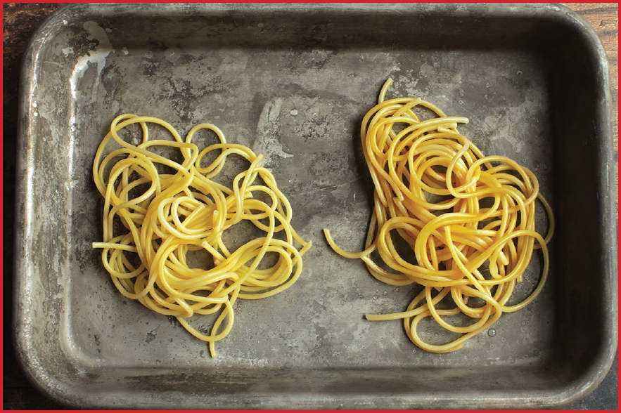

Turn Spaghetti into Ramen with This One Easy Trick
It was a normal Thursday afternoon in 2014. I was testing pizza ovens on the balcony of our apartment in Harlem (as was my habit on your average Thursday back then) when my mom texted me: “I was reading this Japanese cooking blog that says to boil spaghetti with baking soda to make ramen. Have you ever heard of that?”
I hadn’t, and given that I had a few fire-breathing pizza ovens in front of me and dough that wasn’t going to wait, I filed it away in the back of my mind and didn’t think much about it until a couple weeks later when my colleague at Serious Eats Daniel Gritzer, texted me, asking if I had any recommendations for how to make ramen when one doesn’t have access to ramen noodles. (These days, there are a ton of fresh ramen options in most major cities, but back then you had to find a specialty shop.) I remembered my mother’s baking soda suggestion, and it seemed like it was worth a shot.
See, ramen (and other alkaline noodles) get their distinct yellow color, springy bite, and lightly sulfurous aroma from kansui, an alkaline mineral water used to make the noodles. In the West, recipes for alkaline noodles will frequently call for either adding baking soda directly to the dough or baking the baking soda first to convert sodium bicarbonate into sodium carbonate, a more intensely alkaline powder (see here). But the idea that you can take noodles that are already made and simply boil them in alkaline water to achieve similar results was enticing.
I set up two pots side by side, one with plain water and one to which I added a couple teaspoons of baking soda per liter of water. I salted both of them to the same degree, then cooked thin spaghetti noodles in them until they were just cooked through. Side by side, the difference in appearance was striking, with the alkaline noodles showing a deeper yellow color. A promising sign!

The aroma of the alkaline noodles was also more intense, and biting into one proved that the test was a success: the noodle was distinctly springier than the one cooked in plain water, with the slurpable, slippery texture of good alkaline noodles.
Are they as good as real-deal fresh alkaline noodles? No, but they’re an excellent alternative for noodle soups and dressed noodles for anyone who doesn’t have easy access to an alternative and doesn’t feel like making noodles from scratch.
I’ll be honest. I very rarely make my own noodles for the same reason that I don’t make my own soap or my own sneakers: we live in the modern age of specialization, and there are people who make it their life’s work to master these crafts so that I don’t have to. The noodles I can buy at the Asian supermarket are excellent, inexpensive, and accessible. In fact, in most cases they are better than the noodles I can make myself at home.
That said, noodle accessibility can vary around the country and the world, and there are times when you simply feel like producing a meal 100 percent from scratch.* For times like these, I want to go over three different methods for making noodles yourself at home. The first, a technique for making ramen-style alkaline noodles, is by far the most labor-intensive and most-likely-to-not-work-perfectly-the-first-time. The second two are hand-pulled noodles, which are much more forgiving and, frankly, more fun.
I’m fairly certain you will fall into one of three categories:
A.You are a glutton for noodles.
B.You are a glutton for punishment.
C.You enjoy noodles and trying new things with friends and family.
1.If you’re type A, buy your noodles.
2.If you’re type B, I refer you to Sho Spaeth’s excellent guide to homemade alkaline noodles on Serious Eats, which is far more in-depth than the scope of this book would allow for (and to which I have personally very little to add). Search for “How to Make Ramen Noodles from Scratch.”
3.If you’re type C, then hand-pulled noodles are for you, and again, I refer you to a Serious Eats guide, this one by Tim Chin and titled “How to Pull Off Thin Hand-Pulled Lamian Noodles.”
*Well, as from-scratch as is reasonable without first creating the universe.